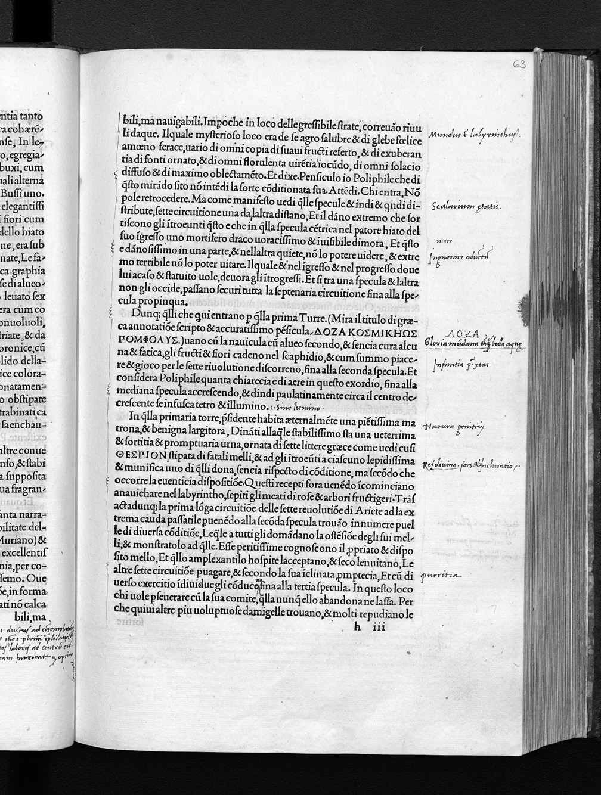
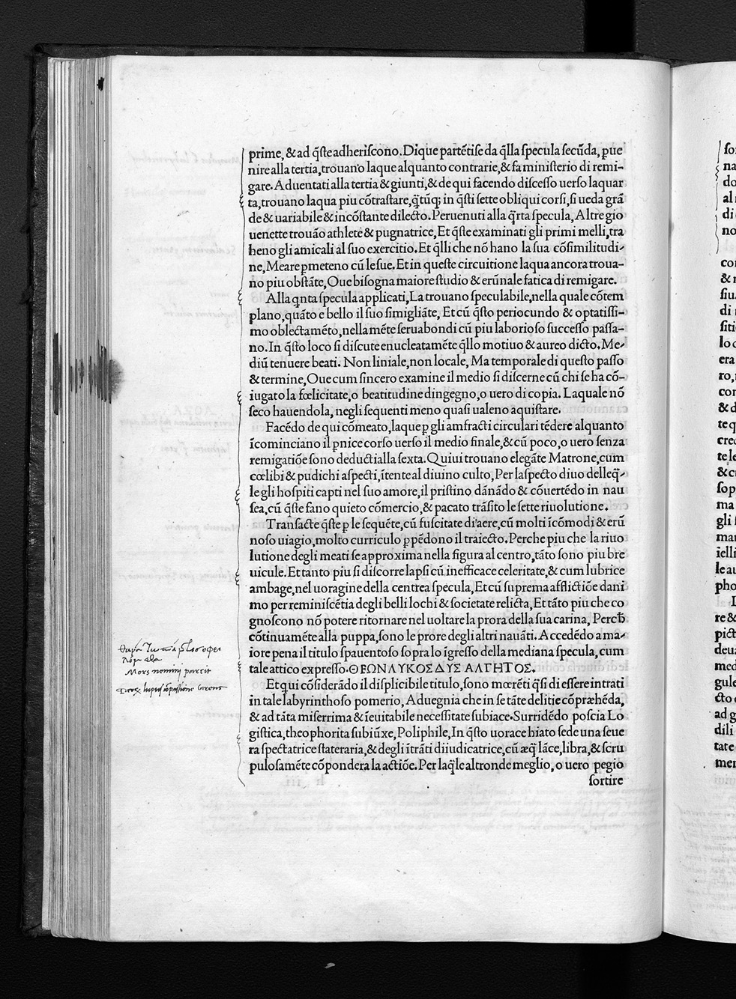

← All Folios
Signature h7r
Folio 63r, Quire h

Biblioteca degli Intronati, Siena — O.III.38
HIGH Unverified

Biblioteca degli Intronati, Siena — O.III.38
HIGH Unverified
Vision Reading (Phase 3 deep analysis)
Primary hand: Multiple (at least 3) · Hands: 3 · Type: woodcut_page · Sig: h7r
Woodcut: Three doorways/portals in a rocky landscape with figures
Poliphilo and companions before three doorways set into a rocky mountainside. Each door has an inscription above it in different scripts. Figures in classical dress stand before the doors. Rocky landscape with vegetation above. This is the allegorical 'choice of three doors' scene — one of the most philosophically significant moments in the HP.
Condition: Good. Hand-colored — the woodcut has been colored in watercolor or similar medium
Transcription Attempts
top_right · n/a · HIGH
125
Page number confirmed
below_woodcut_right · English · MEDIUM
Glory [...] of God [...] Theod[...]
English gloss on THEODOXIA. A reader has translated/interpreted the Greek neologism
right_margin · Latin · LOW
[...] porta [...] mundana [...] Gloria [...]
Latin commentary on the three doors and their allegorical meaning
bottom_margin · Latin/Italian · LOW
de [...] portis [...] [...] marchesini [...] am [...] vel [...] [...] m[...] [...] erastij[...]
Dense annotations at bottom in multiple hands. Possibly includes a reference to Erastus (Thomas Erastus, 1524-1583, anti-Paracelsian polemicist?) or possibly 'Erastiis'. If this is a reference to Erastus, it would connect the reader to 16th-century debates about Paracelsian medicine and alchemy
Scholarly Significance
The three-doors scene is the HP's central allegorical crux: THEODOXIA (glory of God), COSMODOXIA (glory of the world), EROTOTROPHOS (nourisher of love). The multilingual annotations show readers wrestling with these Colonna neologisms. The possible 'Erastus' reference, if confirmed, would be a significant find connecting this copy to 16th-century natural philosophy debates. The hand-coloring of the woodcut indicates a luxury use of the volume.
Cross-references: Russell thesis Ch. 7 (allegorical doors), Photo 139 (p.126, dextra porta), Photo 140 (p.127, Synostra Gloria mundi), HP text: Book I, three-doors episode
Note (possible_new_reference): The name 'erastij' in bottom margin may be a reference to Thomas Erastus. Not confirmed. Requires Russell cross-check.
Vision reading (Claude Code, Phase 3)
Annotations
CROSS_REFERENCE (1)MARGINAL_NOTE (2)
Hand B: Anonymous (possibly Jesuit, St. Omer)
Marginal Note
“mullum LXXX librarum in mari Rubro captum Licinius Mucianus prodidit, quanti
mercatura eum luxuria suburbanis litoribus inventum?”
o lapideo et superbo ponte di tre archi, cum gli capiti alle ripe
sopra gli firmatissimi subici, cum le pille dagli dui fronti carinate, ad continere la structura firmissima,
et cum nobilissime sponde. In le quale nel mediano repando del substituto cuneo del arco, de qui et de
lì, perpolitamente, excitata promineva una porphyritica quadratura fastigiata, continente una
cataglyphia scalptura di hieraglyphi. Nella dextra al nostro transito, vidi una matrona d’uno serpente
instrophiolata (h6v-...
Russell, PhD Thesis, p. 177 (Ch. 7)
Hand B: Anonymous (possibly Jesuit, St. Omer)
Marginal Note
“mullum LXXX librarum in mari Rubro captum Licinius Mucianus prodidit, quanti
mercatura eum luxuria suburbanis litoribus inventum?”
o lapideo et superbo ponte di tre archi, cum gli capiti alle ripe
sopra gli firmatissimi subici, cum le pille dagli dui fronti carinate, ad continere la structura firmissima,
et cum nobilissime sponde. In le quale nel mediano repando del substituto cuneo del arco, de qui et de
lì, perpolitamente, excitata promineva una porphyritica quadratura fastigiata, continente una
cataglyphia scalptura di hieraglyphi. Nella dextra al nostro transito, vidi una matrona d’uno serpente
instrophiolata (h6v-...
Russell, PhD Thesis, p. 177 (Ch. 7)
Hand B: Anonymous (possibly Jesuit, St. Omer)
Cross Reference
“quattordeci.”
uadrato supposito iacea, di quatordeci passi la sua altitudine, et nella extensione,
overo longitudine stadii sei. (b2r)
Let us return now to the vast [‘extremely large’] pyramid, beneath which lay a single huge and solid
plinth or square slab, fourteen paces high and six stadia in extend or breadth. (G 27, insertion mine)
In using the woodcut as a means to index the text, the annotators also noticed other
discrepancies between textual descriptions and the illustration. For example, F. ...
Russell, PhD Thesis, p. 182 (Ch. 7)
Hand B: Anonymous (possibly Jesuit, St. Omer)
Cross Reference
“quattordeci.”
uadrato supposito iacea, di quatordeci passi la sua altitudine, et nella extensione,
overo longitudine stadii sei. (b2r)
Let us return now to the vast [‘extremely large’] pyramid, beneath which lay a single huge and solid
plinth or square slab, fourteen paces high and six stadia in extend or breadth. (G 27, insertion mine)
In using the woodcut as a means to index the text, the annotators also noticed other
discrepancies between textual descriptions and the illustration. For example, F. ...
Russell, PhD Thesis, p. 182 (Ch. 7)
Hand B: Anonymous (possibly Jesuit, St. Omer)
Marginal Note
172
Detail, h7r
One reader also modified a woodcut in order to clarify its position in the three-
dimensional diegetic space within the narrative, in relation to the sculptures depicted in other
woodcuts. In some passages, Poliphilo rotates his gaze around a space while describing a
cluster of buildings or sculptures in relation to each other, as a photographer might move
around a sculpture garden taking shots from a variety of angles. For example, the pyramid,
the elephant and obe...
Russell, PhD Thesis, p. 183 (Ch. 7)
Hand B: Anonymous (possibly Jesuit, St. Omer)
Marginal Note
172
Detail, h7r
One reader also modified a woodcut in order to clarify its position in the three-
dimensional diegetic space within the narrative, in relation to the sculptures depicted in other
woodcuts. In some passages, Poliphilo rotates his gaze around a space while describing a
cluster of buildings or sculptures in relation to each other, as a photographer might move
around a sculpture garden taking shots from a variety of angles. For example, the pyramid,
the elephant and obe...
Russell, PhD Thesis, p. 183 (Ch. 7)